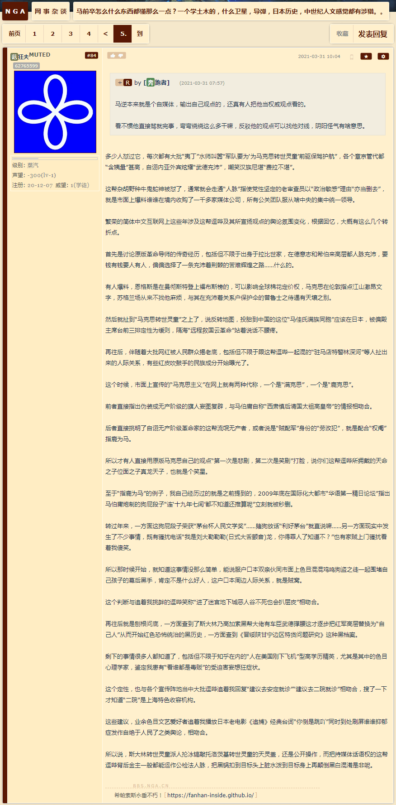
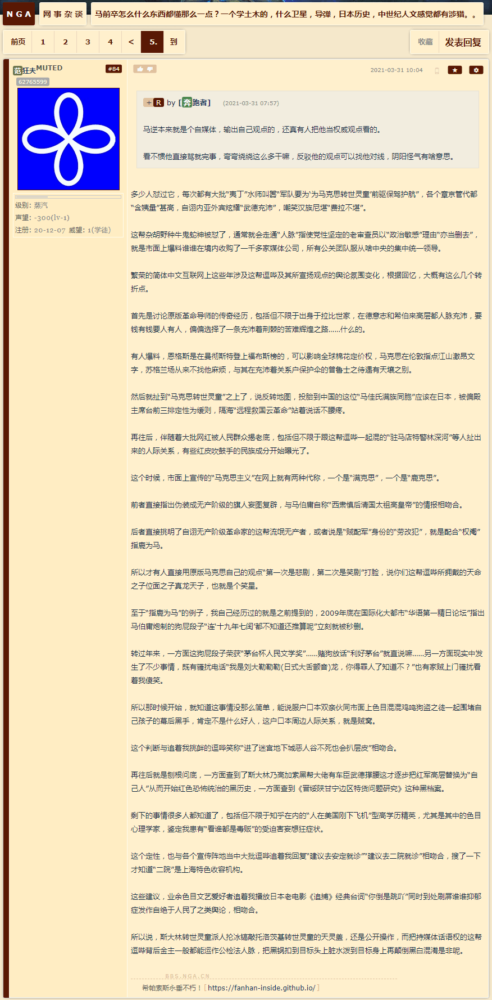

是时候上这图了：《帝国钦定布尔什维克党三巨头齐聚〈人民观察家报〉编辑部》
图略
穆好古是《三亿五千万金卢布》历史档案发掘人，马伯庸是“连‘十九年七闰都’不知道”就荣获茅台杯人民文学奖的钦定文豪，再加上马前卒这野生国师，一家“政治对冲基金”公共关系部门就成立了：
图略


 

是时候上这图了：《帝国钦定布尔什维克党三巨头齐聚〈人民观察家报〉编辑部》
图略
穆好古是《三亿五千万金卢布》历史档案发掘人，马伯庸是“连‘十九年七闰都’不知道”就荣获茅台杯人民文学奖的钦定文豪，再加上马前卒这野生国师，一家“政治对冲基金”公共关系部门就成立了：
图略
马逆就是经常爆论得罪太多人了。
同样是读稿的王骁，董佳宁不会被问“怎么啥都懂啊”。按照每次结束时名单来看，十多个人给马逆写稿子，甚至穆好古还在知乎说过马逆如何力排众议把正常稿子换成自己爆论观点。
那位“穆好古”的稿子怎么可能正常？在九省通衢“军网最黄黄网最军”发表的划时代革命党史文献《三亿五千万金卢布》导致国际化大都市“华语第一精日论坛”娱乐至死の色目逗哔嘲笑“又有卡菲勒被我们马瓦力钓鱼了”呢。
这里补充个旁证，也是这帮“历史爱好者”的丰功伟绩：
图略
一般到了一定粉丝量的，都会有团队的。
不过他这种一开始就在观视频的，一开始已经带团队进去了。
这帮人炮制的舆论，连标点符号都不能信。
远了不提，就说上礼拜，苏伊士运河刚堵住，“鳏网”联合“盎视”出品假新闻，放一段莫名其妙短视频得出结论“已经拖开”，被人民群众使用船讯网权威数据打脸。
等到这两天运河已经疏通了，船都自己开到在大苦湖里漂着了，“鳏网”又引用今日罗刹卫星通讯社假新闻继续炮制假新闻说又堵住了，被人民群众使用船讯网权威数据打脸。
所以才说它们是“政治对冲基金”的喉舌，假新闻都是为了操纵金融市场，其背后金主不加杠杆压重注耍钱就怪了。
武汉是中国的切尔诺贝利？？？？
这比就是个冲塔怪
当年七五、重庆，哪次冲塔也没少了他
2012年中，瓜爹被拿下之后，马前卒特意发了篇雄文《薄熙来还有机会，国家资本主义也会前进》，想必很多过来人都见过。
我是在之江临安“原创文学论坛”之上看到的，其它宣传阵地也有转贴，那时候当时伪装成毛左的马前卒背后金主还惦记着翻盘，到现在繁荣的简体中文互联网上都“自古以来不存在”了，应该是认赌服输的标志。
所以说它们是“政治对冲基金”雇佣的水师吖，以吕不韦“奇货可居”先例为榜样，要赌就“all in”赌国运，不是普通耍钱的金融机构成天“利好茅台”叫嚣那种。
他的社会化扶养观点从最早言论到现在说的，一直在变，变的超大
马前卒那一套被各行各业的有识之士喷成“法西斯”也不是新闻了，在“社会化抚养”谬论刚提出来的时候，就有用当年纳粹大搞特搞《雅利安补完计划》制造大批“希特勒婴儿”类比的。
我的评论是“不就是畜牧业高新科技么，利好蒙牛伊利”，被党性坚定的老审查员以“政治敏感”理由“亦当删去”。
后来在其它“历史”话题当中，有人追根溯源一战原因，说“欧洲祖母”维多利亚老佛爷就是畜牧业科技结晶“人肉生化武器”血友病基因扩散者，是其母老维多利亚郡主身边的来自著名血友病家族的“生活秘书”配的种，出口到二德子的小维多利亚公主祸害了威廉二世。
再结合市面上充沛的色目文艺爱好者尤其是博导学家炒作武德充沛侠义无双题材当中的“双胞胎兄弟”“替身演员”“影武者”得出结论“造化弄人”，以及色目情报掮客炒作社会新闻“仇富护士偷换孩子”乃至最近“郭威姚策案”已经直说了“遗传病家族の劣根性”，阴谋诡计差不多真相大白于天下了。
现在还把马前卒当回事的，除了其背后金主爆仓破产焦头烂额指使家养包衣阿哈硬着头皮肿着脸到处散布假新闻企图苟延残喘的利益相关者之外，都是纯傻哔。
毕竟我国媒体人从政只有纳投名状这一条路
那要是投名状纳错了呢？比方说马前卒直到十八个大前夕还在吹捧薄熙来的经典操作。
在那之前就有很多网友总结，凡是在论坛上主题贴远比回复多的，都是准备炒作成“钦定文豪野生国师意见领袖指路明灯”做着“朝为田舍郎，暮登天子堂”白日梦的政治投机分子，有点知名度能混出头的就有背后金主配备“团队”。
那时候我就喷以马前卒为典型的这帮“自媒体公众号”的政治坐标，说“多方下注左右逢源墙头草随风倒”已经不够确切了，比较恰当的形容是在偏殿方针政策路线计划之坐标轴上下来回震荡的“阻尼运动”，随着红头文件的积累，振幅越来越小，一定会归零为“坚决拥护党中央，谁在中央拥护谁”。
马前卒还在九省通衢“军网最黄黄网最军”之上混的时候，一帮“体制内小公务员”就公开宣称“听党的话跟党走，坚决做党一条狗，党叫咬谁就咬谁，让咬几口咬几口”，马前卒还点头称是呢。
早就说现在网上这环境肯定是有俩边一起引战的，这一看搞的都快成宇宙了，没事干拉起来互相打一架
它出道的网名就唤作“马前卒”，因为高考前夕把身份证户口本改成满族的缘故，曾经被嘲笑为“一曲新附军包衣忠诚的赞歌”。
当年马前卒还是毛左人设的时候解释过“马是马克思的马”，评论就是“投胎到肃慎的马克思转世灵童姓马没跑了”，后来才有马伯庸跳出来自称“西肃慎后清国太祖高皇帝”到处招摇撞骗。
但是马伯庸在豆瓣的帐号是“加里波第”，也是为王前驱的一块抹布的人设，就负责到处以扫帚星乌鸦嘴形象招灾惹祸。
对，就是各种负面新闻“利空”这个那个，先放话“祥瑞”，然后幕后黑手出动特种部队炮制天灾人祸，政治对冲基金“空军大元帅”提前下注财源滚滚。
但凡有人质疑，就有大批水师追着喷，这帮童年才俊喷不过就插科打诨嬉皮笑脸“我们年轻人在网上闹着玩呢”“认真你就输了”糊弄过去。
就说最近，苏伊士运河堵船，那许多假新闻和赚眼球的挖掘机之类烂梗都出来了，本坛“大时代”版块那帮赌狗，是不是成天叫嚣利好什么利空什么？
这就是“剧情营业”吖，美国还有爆料索马里海盗被捕后讼棍辩护收了高盛的佣金专门袭击其做空的企业于是应该视为银行家而不是恐怖分子，也是旁证。
简单说，把这帮有组织有纪律有经费有计划的“自媒体公众号”看成金融恐怖分子对外宣传部就可以了。
马逆本来就是个自媒体，输出自己观点的，还真有人把他当权威观点看的。
看不惯他直接骂就完事，弯弯绕绕这么多干嘛，反驳他的观点可以找他对线，阴阳怪气有啥意思。
多少人怼过它，每次都有大批“夷丁”水师叫嚣“军队要为‘为马克思转世灵童前驱’的卒子保驾护航”，各个章京管代都“含姨量”甚高，自诩内亚外宾炫耀“武德充沛”，嘲笑汉族尼堪“费拉不堪”。
这帮杂胡野种牛鬼蛇神被怼了，通常就会走通“人脉”指使党性坚定的老审查员以“政治敏感”理由“亦当删去”，就是市面上爆料谁谁在境内收购了一千多家媒体公司，所有公关团队服从啥中央的集中统一领导。
繁荣的简体中文互联网上这些年涉及这帮逗哔及其所宣扬观点的舆论氛围变化，根据回忆，大概有这么几个转折点。
首先是讨论原版革命导师的传奇经历，包括但不限于出身于拉比世家，在德意志和希伯来高层都人脉充沛，要钱有钱要人有人，偏偏选择了一条充沛着荆棘的苦难辉煌之路……什么的。
有人爆料，恩格斯是在曼彻斯特登上福布斯榜的，可以影响全球棉花定价权，马克思在伦敦指点江山激昂文字，苏格兰场从来不找他麻烦，与其在充沛着关系户保护伞的普鲁士之待遇有天壤之别。
然后就扯到“马克思转世灵童”之上了，说反转地图，投胎到中国的这位“马佳氏满族同胞”应该在日本，被偏殿主席台前三排定性为缓则，隔海“远程救国云革命”站着说话不腰疼。
再往后，伴随着大批网红被人民群众揭老底，包括但不限于跟这帮逗哔一起混的“驻马店特警林深河”等人扯出来的人际关系，有些红皮吹鼓手的民族成分开始曝光了。
这个时候，市面上宣传的“马克思主义”在网上就有两种代称，一个是“满克思”，一个是“鹿克思”。
前者直接指出伪装成无产阶级的旗人妄图复辟，与马伯庸自称“西肃慎后清国太祖高皇帝”的情报相吻合。
后者直接挑明了自诩无产阶级革命家的这帮流氓无产者，或者说是“贼配军”身份的“劳改犯”，就是配合“权阉”指鹿为马。
所以才有人直接用原版马克思自己的观点“第一次是悲剧，第二次是笑剧”打脸，说你们这帮逗哔所拥戴的天命之子位面之子真龙天子，也就是个笑星。
至于“指鹿为马”的例子，我自己经历过的就是之前提到的，2009年底在国际化大都市“华语第一精日论坛”指出马伯庸炮制的狗屁段子“连‘十九年七闰’都不知道还推算呢”立刻就被秒删。
转过年来，一方面这狗屁段子荣获“茅台杯人民文学奖”……赌狗放话“利好茅台”就直说嘛……另一方面现实中发生了不少事情，既有骚扰电话“我是刘大勒勒勒(日式大舌颤音)龙，你得罪人了知道不？”也有家贼上门骚扰看着我傻笑。
所以那时候开始，就知道这事情没那么简单，能说服户口本双亲伙同市面上色目混混鸡鸣狗盗之徒一起围堵自己孩子的幕后黑手，肯定不是什么好人，这户口本周边人际关系，就是贼窝。
这个判断与追着我挑衅的逗哔笑称“进了迷宫地下城恶人谷不死也会扒层皮”相吻合。
再往后就是刨根问底，一方面查到了斯大林乃高加索黑帮大佬有车臣武德撑腰这才逐步把红军高层替换为“自己人”从而开始红色恐怖统治的黑历史，一方面查到《晋绥陕甘宁边区特货问题研究》这种黑档案。
剩下的事情很多人都知道了，包括但不限于知乎在内的“人在美国刚下飞机”型高学历精英，尤其是其中的色目心理学家，鉴定我患有“看谁都是毒贩”的受迫害妄想狂症状。
这个定性，也与各个宣传阵地当中大批逗哔追着我回复“建议去安定就诊”“建议去二院就诊”相吻合，搜了一下才知道“二院”是上海特色收容机构。
这些建议，业余色目文艺爱好者追着我播放日本老电影《追捕》经典台词“你倒是跳吖”同时到处刷屏谁谁抑郁症发作自绝于人民了之类舆论，相吻合。
所以说，斯大林转世灵童派人抡冰镐敲托洛茨基转世灵童的天灵盖，还是公开操作，而把持媒体话语权的这帮逗哔背后金主一般都能运作公检法人脉，把黑锅扣到目标头上脏水泼到目标身上再颠倒黑白混淆是非呢。

2021-03-31 04:35:05